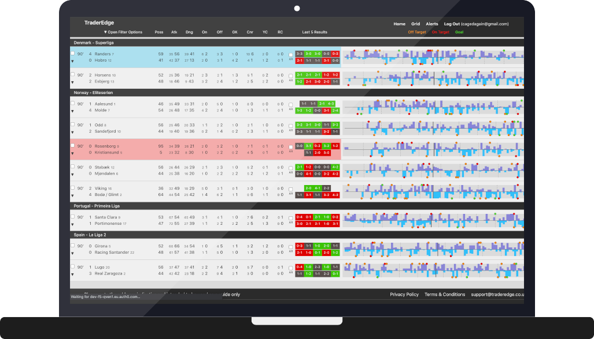

TraderEdge
Web Application
ReactJS, Node, MySQL, AWS
A web application to monitor real-time football statistics and trading market prices to be used as a tool for football traders. The bulk of the product is the live view that takes in-play statistics from an external API, breaks this down into minute-by-minute events and displays the data in both grid and graph forms. There are also custom algorithms that can determine team pressure and "HOT & COLD" games. The system also features a custom filter builder that can be used to send messages to a users mobile device if any games have met a specific criteria. This product has been built using a Node.js backend and a React/Redux frontend. (BTW, the marketing site was not made by me)
